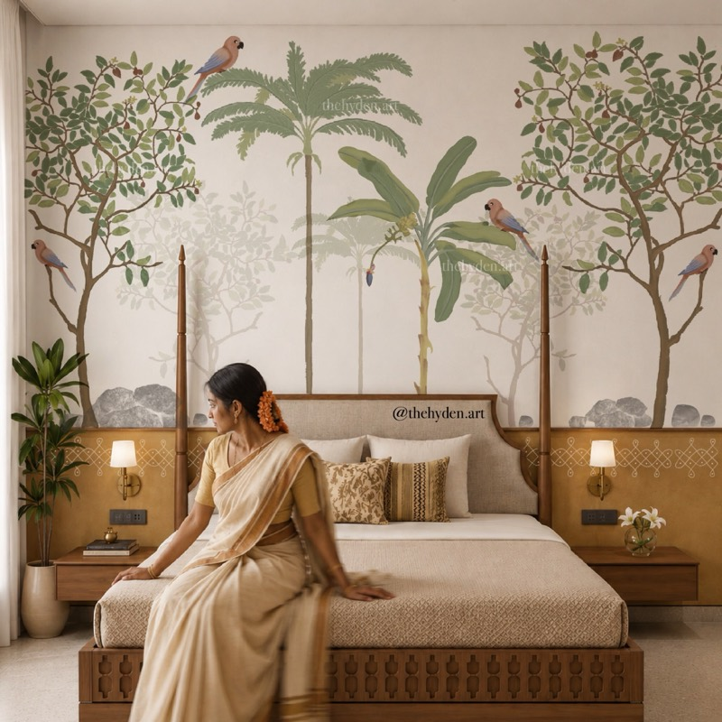

Each block uses the site's real images, fonts and colours. Press Replay, switch between Current and New, and pick the ones to keep. This page is not part of the site.
The dots (pulli) appear first, then the line loops around them stroke by stroke, the way a kolam is drawn at a doorstep. It's for the motif band and section dividers. This version is a stand-in. The final one would be hand-traced from her kolam.png, without AI.
The painting appears under five back-and-forth brush sweeps with rough edges, instead of the current straight wipe. The room photo beside it keeps the plain wipe so the two don't compete.

Tap a tile and the photo grows from its spot into the full view, then shrinks back on close. It uses the browser's View Transitions with no library, and browsers without it get the current fade.
Picking a design rolls it onto the wall top to bottom, like it's being put up, instead of an instant swap. The room here is a stand-in; the real one uses the clipped living-hall wall from tryon.js.
A walnut brush mark sweeps under the italic word when the heading scrolls in. It's small and quiet, and it ties the type to the painting theme. It could go on 2 or 3 key headings only.
Wallpapers, murals, decals and frames, painted by hand and drawn by an architect.
The map routes already draw in (netmap.js), and the Library rolls already unroll (library.js). The parrot offer animation is parked until Hari asks for it.